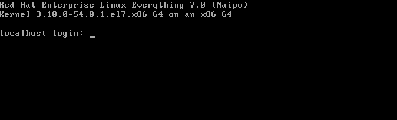

vm_name = "rh-test" password = "password" # Virtualbox workarounds #click("1396821812290.png") def go_faster(): # Go faster button (skip optional tests and timeouts) try: wait(, 30) App.focus(vm_name) type(Key.ENTER) except FindFailed: pass else: try: wait(, 30) App.focus(vm_name) type(Key.ESC) except FindFailed: pass def select_language(): wait(, 120) App.focus(vm_name) type("c", KeyModifier.ALT) wait(, 5) type(Key.RIGHT) type(Key.ENTER) def configure_partitioning(): wait(, 20) App.focus(vm_name) type(Key.TAB, KeyModifier.SHIFT) type(Key.TAB, KeyModifier.SHIFT) sleep(5) type(Key.ENTER) sleep(0.2) type(Key.ENTER) sleep(0.2) type(Key.ENTER) def configure_users(): wait(Pattern().similar(0.45), 5) App.focus(vm_name) type(Key.TAB) type(Key.ENTER) wait(, 10) App.focus(vm_name) type(password) type(Key.TAB) type(password) type(Key.TAB) type(Key.ENTER) try: # Only for weak passwords! wait(, 1) type(Key.TAB, KeyModifier.SHIFT) type(Key.ENTER) except FindFailed: pass def finish_and_reboot(): wait(Pattern().targetOffset(379,5), 1800) App.focus(vm_name) type(Key.TAB) type(Key.ENTER) def first_login(): wait(, 180) App.focus(vm_name) type("root") type(Key.ENTER) sleep(0.5) type(password) type(Key.ENTER) sleep(0.5) type("dhclient") type(Key.ENTER) type("systemctl start sshd") type(Key.ENTER) type("ip addr show") type(Key.ENTER) #go_faster() #select_language() #configure_partitioning() #configure_users() #finish_and_reboot() first_login()